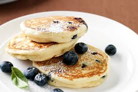

Quality Food. Everyday Low Prices.
What can we help you find?
Recipe of the Day

Fluffy Blueberry Pancakes
Start your day with these light and fluffy pancakes bursting with fresh blueberries. A family favorite that's easy to make and always delicious!
Dietary: Vegetarian
Perfect for: Weekend breakfast, Special occasions
Recipe Ingredients and Steps
Ingredients:
- 1½ cups all-purpose flour
- 3½ tsp baking powder
- 1 tsp salt
- 1 tbsp white sugar
- 1¼ cups milk
- 1 egg
- 3 tbsp melted butter
- 1 cup fresh blueberries
- Maple syrup to serve
Steps:
- Sift together flour, baking powder, salt and sugar in a large bowl
- In another bowl, whisk together milk, egg and melted butter
- Pour wet ingredients into dry ingredients and stir until just combined
- Gently fold in blueberries
- Heat a lightly oiled griddle or frying pan over medium heat
- Pour ¼ cup batter for each pancake
- Cook until bubbles form and edges are dry (about 2-3 minutes)
- Flip and cook until browned on the other side
- Serve warm with maple syrup
Tip: For extra fluffy pancakes, let the batter rest for 5 minutes before cooking.